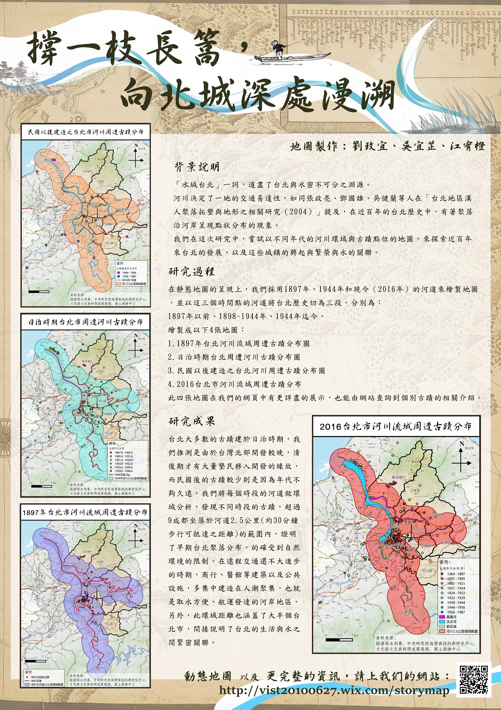

撐一隻長篙，向北城深處慢溯
 三等獎
三等獎
作者介紹
地理一
吳宜芷
地理一
江宥橙
地理一
劉玫宜
-
看著他們的地圖，
彷彿可以置身於歷史之中，想像當時的情景，再與現在進行時空對比。
——政治二 簡湘凌 -
無論是在網站或是資料處理上，
都花費很深的功夫，能夠成功吸引在場的每個人。
——地理一 陳立恆 -
藉由古地圖與現代地圖的疊合，
能夠看到台北市在今昔的變化，並能結合歷史教育以及深度觀光旅遊。
——地理一 楊宇翔
地圖海報

主題說明
臺灣的臺北
漫步於或典雅、或素儉的古蹟，傾聽鴨川潺潺的流水聲，二者合一，
是至京都遊歷最美好的體驗，也是我們的製作動機。同有著百年古蹟，同有著河川交匯，
臺北也許可以說是臺灣的京都，但我們更希望，臺北是臺灣的臺北。
漫水的臺北
「大河文明」一詞道盡河川與人類發展之密不可分，而臺北城市之發展亦是。
河川是土地肥美之源、是交通往復之道，如張政亮、鄧國雄、
吳健蘭等人在＜台北地區漢人聚落拓墾與地形之相關研究＞（2004）提及，
在近百年的台北歷史中，有著聚落沿河岸呈現點狀分布的現象。
我們將每個時段的河道做環域分析，驚訝地發現大半個臺北市皆落在河道2.5公里
（約30分鐘步行可抵達之距離）的範圍內，故超過九成的文化資產也是如此。
若站在城市中心處，最遠的河道也不過步行四十分鐘可達，
無失對於作家舒國治「水城台北」之譽。
原來，臺北與河川那麼近。
古老的臺北
在靜態地圖的呈現上，因資料來源的限制，我們採用1897年、1944年和現今（2016年）
的河道來繪製地圖，並以這三個時間點的河道將臺北歷史分為三段，繪製成以下4張地圖：
- 1897年臺北河川流域暨周遭古蹟分布圖
- 日治時期（1898-1944年）臺北河川流域暨周遭古蹟分布圖
- 民國（1945年）後臺北河川流域暨周遭古蹟分布圖
- 2016年臺北河川流域暨周遭古蹟分布圖
此四張地圖在我們的網頁中有更詳盡的展示，也能由網站查詢到個別文化資產的相關簡介。
隨新店溪、基隆河、淡水河流域之變動，藉河川環域與文化資產點位之地圖，
我們得以漫溯百餘年之時光，應用於教育、觀光、文化保存之領域。